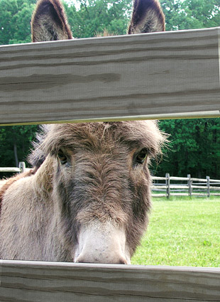

Recent/Upcoming:
Brick Library, Brick, NJ Jan – February 2008
Shoot : The Photography Show Sept. 14 – Nov. 3, 2007
Gallery 125 Trenton, NJ
9116: 20 Artists Remember Brookdale Community College
Western Monmouth Campus Gallery Sept. 07One-woman shows
Current/Upcoming:
Ocean County Library – Berkeley Branch
Bayville, NJ September & October 2007Completed One-woman shows:
RSI Bank – Long Branch, NJ Jan/Feb 2007
Ocean County Library December 2006
Brookdale Community College – Freehold Gallery November 2006
Guild of Creative Art - Shrewsbury, NJ April 2006
Marlboro Free Public Library April/May 2006
Jackson Library July/August 2005
Monmouth County Library Headquarters Manalapan, NJ April 2005
Ocean County Library – Lakewood, NJ September 2004
Ocean County Library – Toms River, NJ August 2004
Monmouth County Wall Public Library - Wall, NJ January 2004Rotating Exhibits:
Kennington Court – Tinton Falls, NJ Since June 06
Art of Skin Care – Spring Lake, NJ Since May 06
Belmar Wall Animal Hospital Since November 2005
Brick Town Veterinary Clinic Since August 2004
Art Alliance Red Bank, NJ Nov. 04
Freehold County Clerks Office – Freehold, NJ Bimonthly since July 2003
The Blood Center – Shrewsbury, NJ Since August 2003Permanent Exhibits:
Monmouth Medical Center – West Long Branch, NJ

